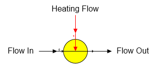

Injection Heater An injection heater station is used to heat a flow stream by direct injection of steam or vapor into the flow. The injection heater shape provided with Sugars is shown below.

General Features An injection heater station is used to heat a process flow stream (goes into port 0) with a heating flow stream (goes into port 1) by direct injection of the hot flow into the process flow; hence, the output flow stream from the station is a combination of the two flows. If either flow stream contains sucrose crystals and heating the flow causes the flow to become under-saturated, then sucrose crystals will melt until the output flow stream is at saturation.